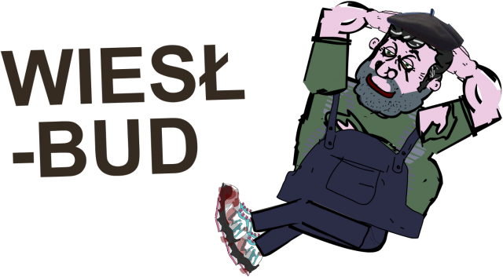

Wiesł-Bud
Wykończeniówka

Zajmujemy się:
- remontami
- wykończeniówką, szczególnie klientów
popijaniem podczas pracy
Historia firmy
Firma Wiesł-Bud została założona w 1991 r. Od dnia jej powstania pracujemy dzień i noc nad naszą reputacją. Nasze remonty ucieszyły już setki klientów... a co będziemy się chwalić, zobacz nasze opinie.
Gdzie pracujemy?
- Grochów
- Za dopłatą inne dzielnice Warszawy
- Nie pracujemy w Poznaniu ze względu na zagrożenie ze strony dresiarzy!
Opinie
- ODDAWAĆ MI ROWER!
- Janusz z Warszawy
- Zabiję.
- Andrzej z Warszawy
- Ło ty raz dwa trzy
- Paweł z Warszawy
- Nie no, tata dobrze robi
- Adrian z Warszawy
Jesteś zainteresowany/a?
Cennik
Zleć nam robotę
Reklamacje
Zdjęcie © Bartosz Walaszek